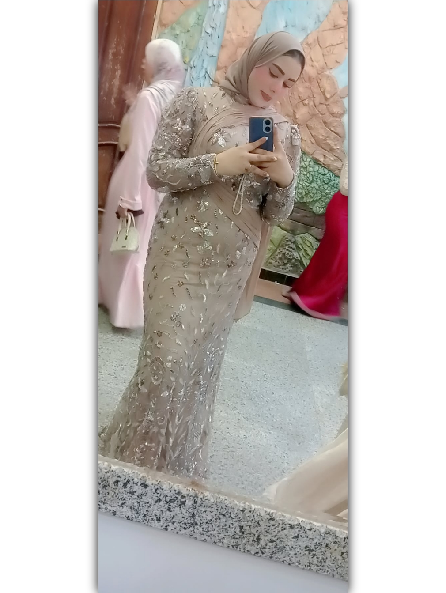
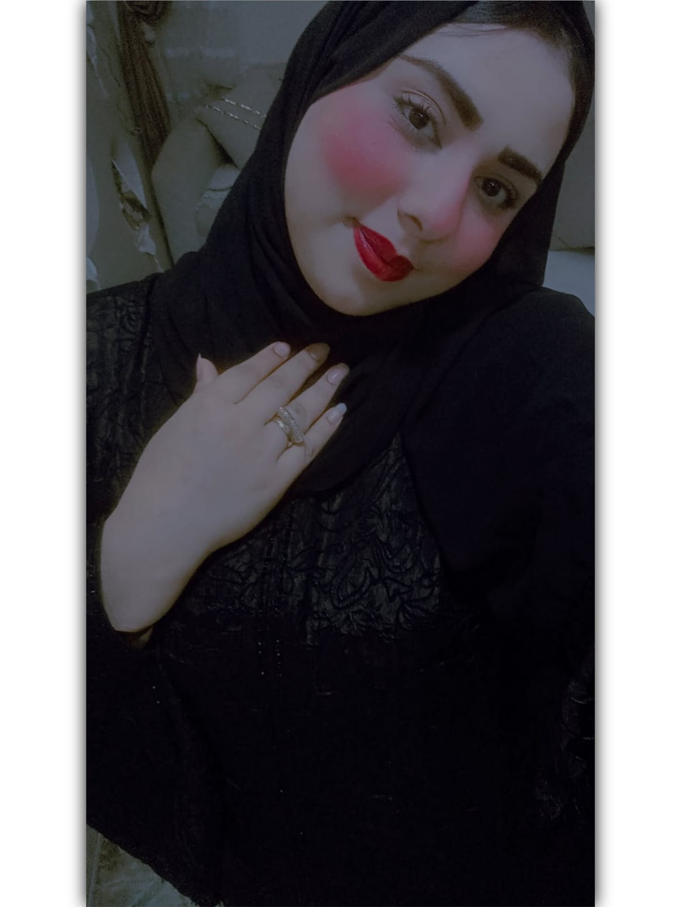
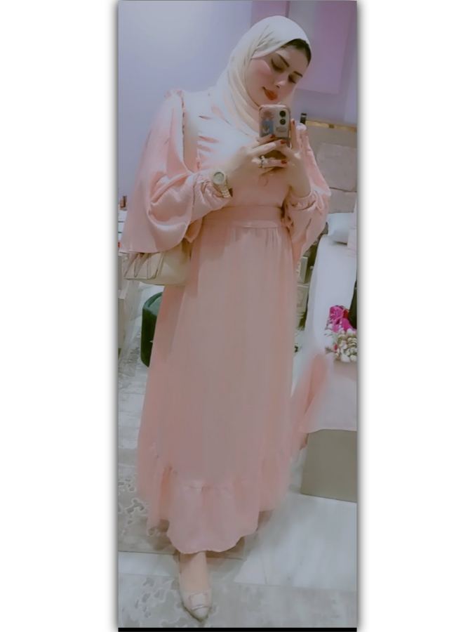
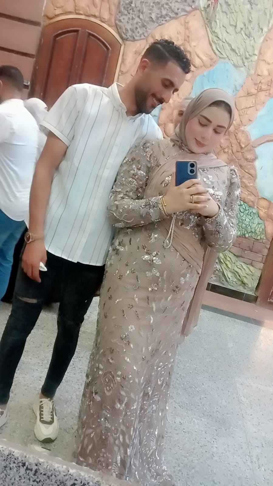
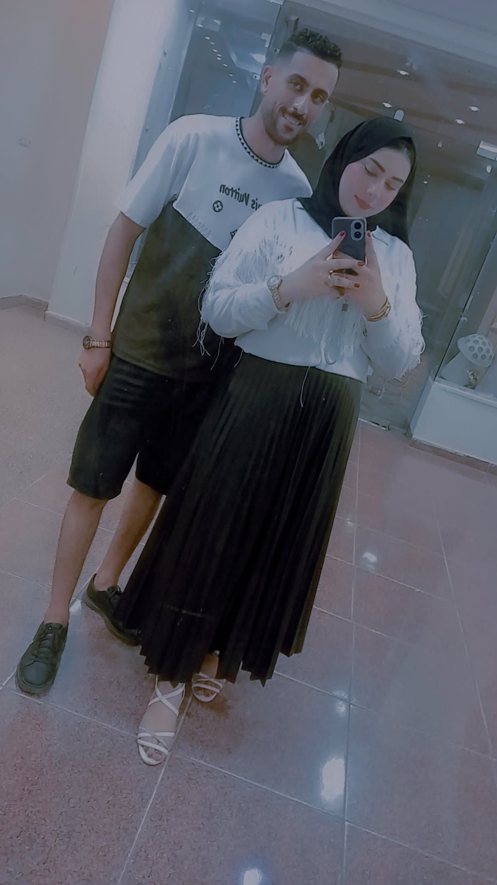
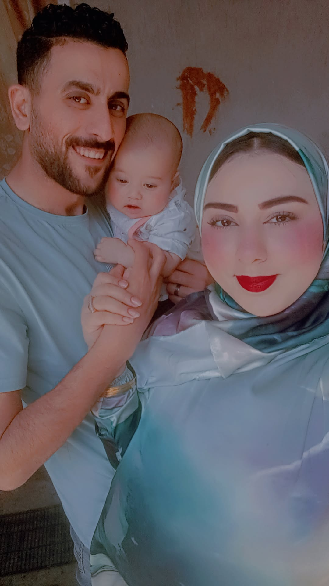
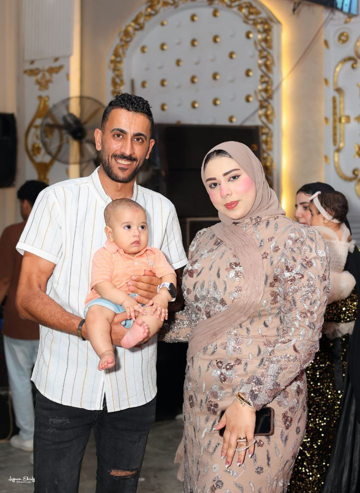
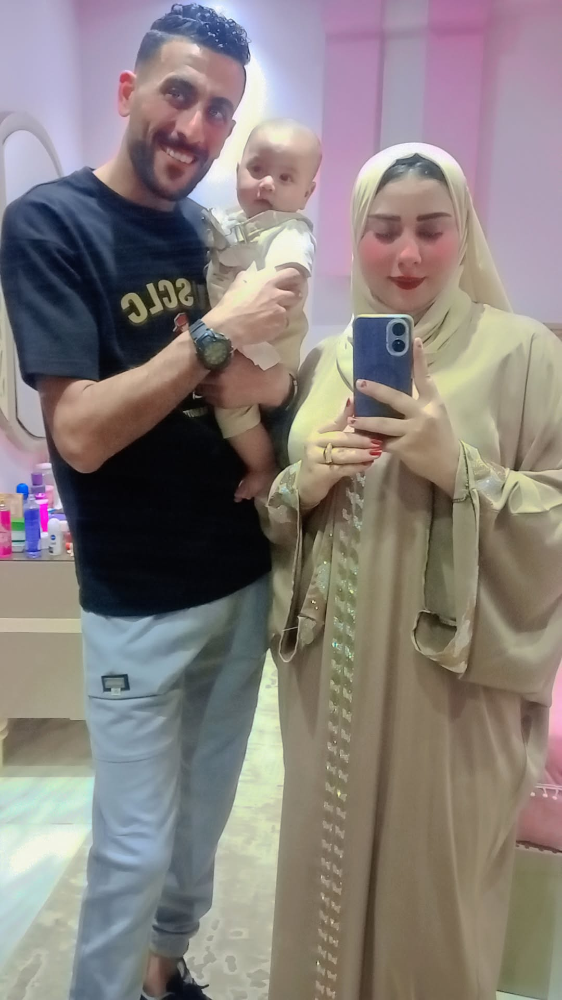
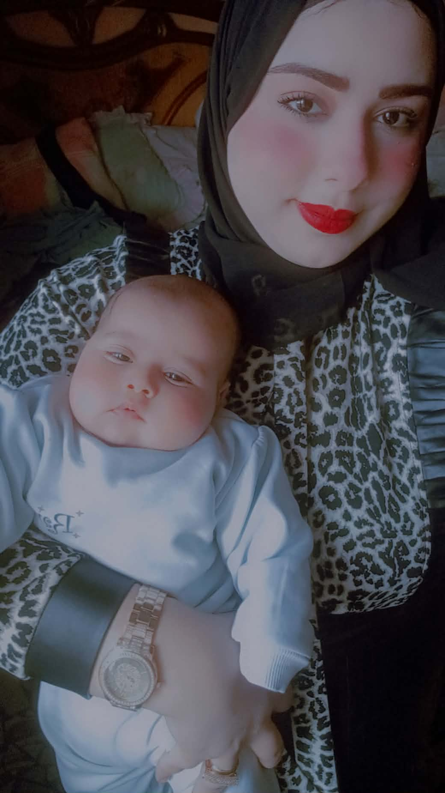

THE COUNTDOWN
A Secret Is Waiting for You
في مفاجأة مستنياكي... وكل ثانية بتقرّبك منها.
THE COUNTDOWN
00يوم
00ساعة
00دقيقة
00ثانية









لتجربة سينمائية كاملة، فعّلي الصوت.
بعض المتصفحات تحتاج لمسة أولى لتشغيل الصوت.A Secret Is Waiting for You
في مفاجأة مستنياكي... وكل ثانية بتقرّبك منها.
الوقت جه... مستعدة تكتشفي المفاجأة؟
يارب سنتك الجديدة تكون مليانة فرحة ونجاح وراحة بال، وتحققي فيها كل اللي نفسك فيه.
مل سنة وانت طيبة يا ام فهد
عيد ميلاد سعيد يا أجمل أخت.
في ذكريات مهما عدّى عليها الوقت، بتفضل منوّرة جوانا...